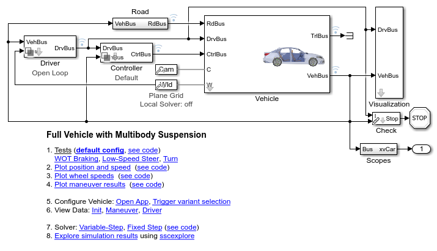
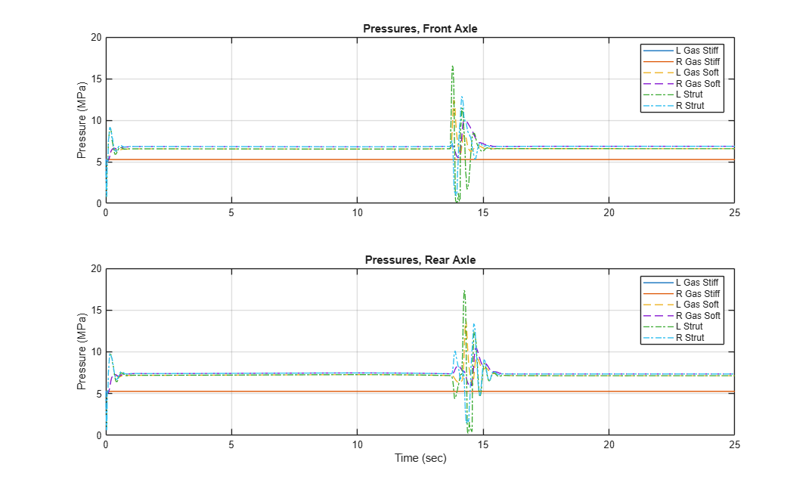
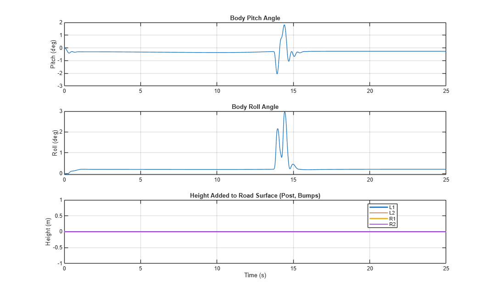
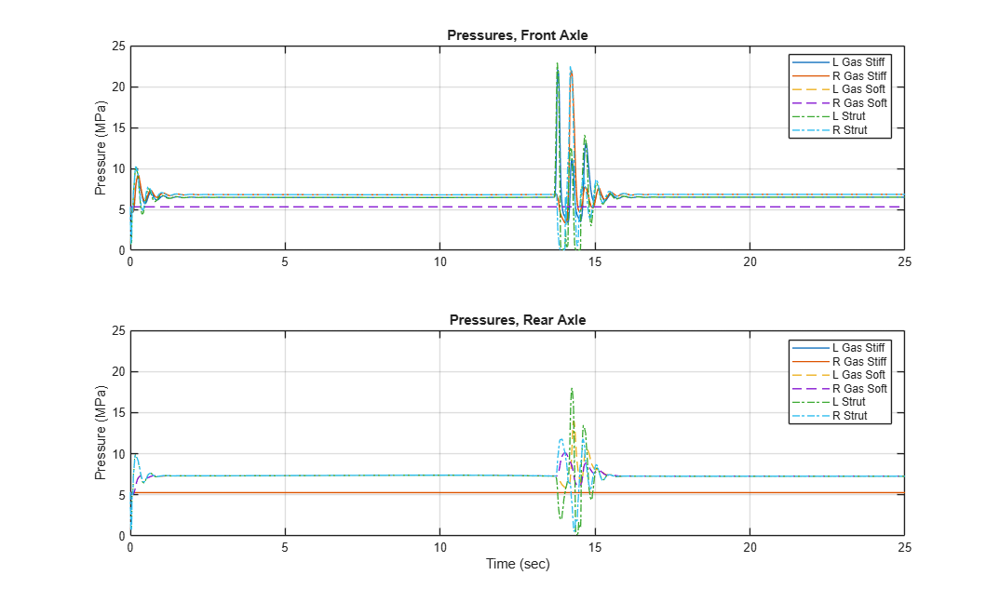
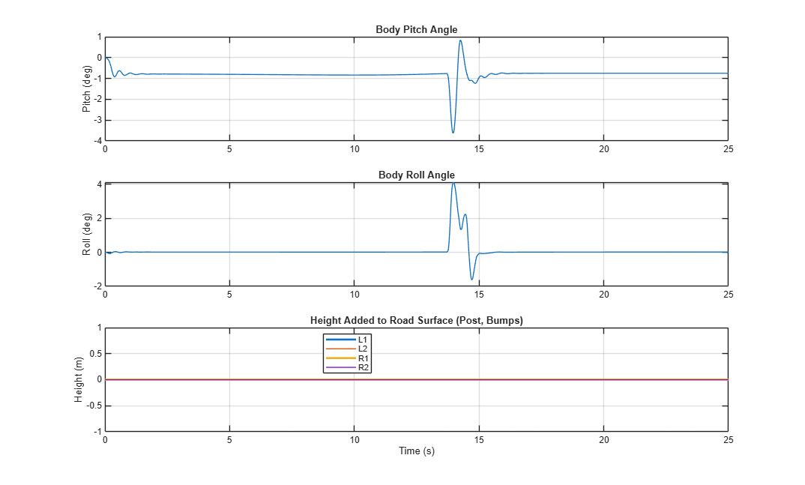
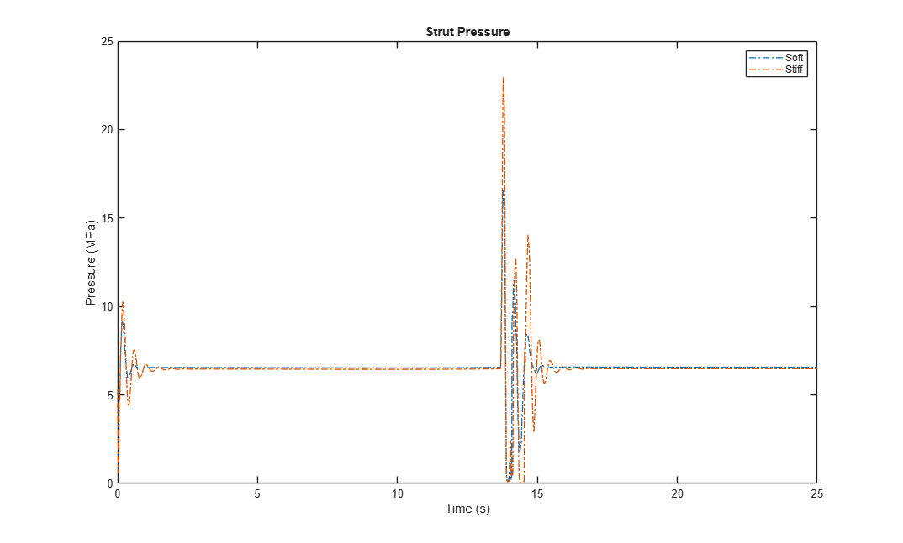
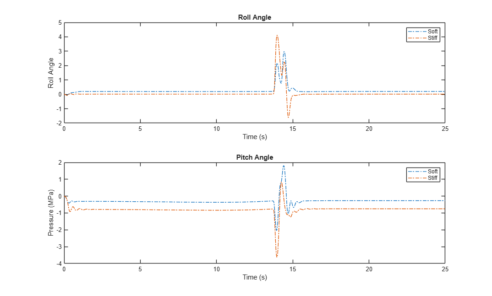
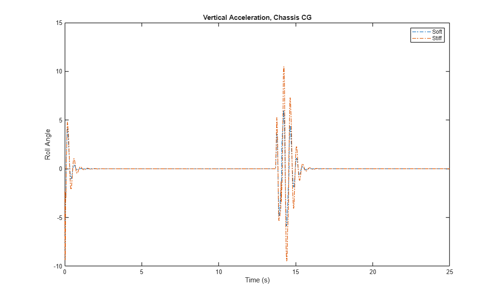

Hydropneumatic Suspension, Full Vehicle
The commands below simulate a multibody model of a vehicle with a hydropneumatic suspension. A custom bump is defined using MATLAB, and the vehicle is driven over this bump. Plots of the simulation results show how the suspension performs in soft and stiff configurations.
Contents
- Step 1: Open full vehicle model
- Step 2: Configure model with hydropneumatic suspension, soft settings
- Step 3: Select maneuver
- Step 4: Run simulation
- Step 5: Explore simulation results: strut pressure
- Step 6: Explore simulation results: roll and pitch angles
- Step 7: Configure model with hydropneumatic suspension, stiff settings
- Step 8: Run simulation
- Step 9: Explore simulation results: strut pressure
- Step 10: Explore simulation results: roll and pitch angles
- Step 11: Compare strut pressure for different suspension settings
- Step 12: Compare roll and pitch angle for different suspension settings
- Step 13: Compare vertical acceleration for different suspension settings
Step 1: Open full vehicle model
This can be done from the project shortcut or MATLAB Command line.
mdl = 'sm_car';
open_system(mdl)

Step 2: Configure model with hydropneumatic suspension, soft settings
This can be done by adjusting the model or from the MATLAB Command line. This step selects vehicle configuration using preset number 241 which is a SUV with a hydropneumatic suspension. Further adjustments are made to prepare the vehicle and controller for the tests
sm_car_load_vehicle_data(mdl,'241'); % Drive each wheel independently with an ideal torque source Vehicle.Powertrain.Driveline = VDatabase.Driveline.Axle2_L1_R1_L2_R2_default; Vehicle.Powertrain.Power = VDatabase.Power.Ideal_L1_R1_L2_R2_default; % Make the chassis geometry transparent Vehicle.Chassis.Body.BodyGeometry.Opacity.Value = 0.3; % Enable controller with soft suspension setting set_param([mdl '/Controller/Default'],... 'popup_spring_control_A1','Hydropneumatic',... 'popup_gas_spring_A1','Soft'); set_param([mdl '/Controller/Default'],... 'popup_spring_control_A2','Hydropneumatic',... 'popup_gas_spring_A1','Soft'); % Disable rear steering Control.Default.Steer.Gain.nRearAct.Value = 0;
Step 3: Select maneuver
This code configures the test to drive the vehicle over a bump at a constant speed. For versions earlier than MATLAB R2025b, a different maneuver must be used.
if(verLessThan('MATLAB','25.2')) sm_car_config_maneuver(mdl,'WOT Braking'); % Alternate: Double-Lane Change %sm_car_config_maneuver(mdl,'Double Lane Change ISO3888'); else sm_car_config_maneuver(mdl,'GS Grid Surface BumpTrpz'); % Custom bump definition offroad_ex03_car_bump_define % Alternate: Double-Lane Change %sm_car_config_maneuver(mdl,'Double Lane Change ISO3888'); end
Step 4: Run simulation
This can be done from Simulink or from the MATLAB command line.
sim(mdl)
Step 5: Explore simulation results: strut pressure
Use the Simscape Results Explorer to plot the following quantities:
sm_car_plot12airoilspr_press
% Save results for comparison: strut pressure
stFL_p_soft = stFL_p;

Step 6: Explore simulation results: roll and pitch angles
Use the Simulink Data Inspector to plot the following quantities:
sm_car_plot5bodymeas % Save results for comparison: roll and pitch angle simlog_t_soft = simlog_t; simlog_aRoll_soft = simlog_aRoll; simlog_aPitch_soft = simlog_aPitch; % Save results for comparison: CG vertical acceleration gz_soft = logsout_sm_car.get('VehBus').Values.Chassis.Body.CG.gz.Data; gz_soft_t = logsout_sm_car.get('VehBus').Values.Chassis.Body.CG.gz.Time;

Step 7: Configure model with hydropneumatic suspension, stiff settings
set_param([mdl '/Controller/Default'],... 'popup_spring_control_A1','Hydropneumatic',... 'popup_gas_spring_A1','Stiff'); set_param([mdl '/Controller/Default'],... 'popup_spring_control_A2','Hydropneumatic',... 'popup_gas_spring_A1','Stiff');
Step 8: Run simulation
This can be done from Simulink or from the MATLAB command line.
sim(mdl)
Step 9: Explore simulation results: strut pressure
Use the Simulink Data Inspector to plot the following quantities:
sm_car_plot12airoilspr_press
% Save results for comparison: strut pressure
stFL_p_stiff = stFL_p;

Step 10: Explore simulation results: roll and pitch angles
Use the Simulink Data Inspector to plot the following quantities:
sm_car_plot5bodymeas % Save results for comparison: roll and pitch angle simlog_t_stiff = simlog_t; simlog_aRoll_stiff = simlog_aRoll; simlog_aPitch_stiff = simlog_aPitch; % Save results for comparison: CG vertical acceleration gz_stiff = logsout_sm_car.get('VehBus').Values.Chassis.Body.CG.gz.Data; gz_stiff_t = logsout_sm_car.get('VehBus').Values.Chassis.Body.CG.gz.Time;

Step 11: Compare strut pressure for different suspension settings
This plot shows the response for the suspension system with the soft spring and the stiff spring.
figure(999); plot(stFL_p_soft.time,stFL_p_soft.values,'-.','LineWidth',1,'DisplayName','Soft'); hold on; plot(stFL_p_stiff.time,stFL_p_stiff.values,'-.','LineWidth',1,'DisplayName','Stiff'); hold off; xlabel('Time (s)'); ylabel('Pressure (MPa)'); title('Strut Pressure'); legend show;

Step 12: Compare roll and pitch angle for different suspension settings
This plot shows the response for the suspension system with the soft spring and the stiff spring.
figure(998); subplot(211) plot(simlog_t_soft,simlog_aRoll_soft,'-.','LineWidth',1,'DisplayName','Soft'); hold on; plot(simlog_t_stiff,simlog_aRoll_stiff,'-.','LineWidth',1,'DisplayName','Stiff'); hold off; xlabel('Time (s)'); ylabel('Roll Angle'); title('Roll Angle'); legend show; subplot(212) plot(simlog_t_soft,simlog_aPitch_soft,'-.','LineWidth',1,'DisplayName','Soft'); hold on; plot(simlog_t_stiff,simlog_aPitch_stiff,'-.','LineWidth',1,'DisplayName','Stiff'); hold off; xlabel('Time (s)'); ylabel('Pressure (MPa)'); title('Pitch Angle'); legend show;

Step 13: Compare vertical acceleration for different suspension settings
This plot shows the response for the suspension system with the soft spring and the stiff spring.
figure(997); plot(gz_soft_t,gz_soft,'-.','LineWidth',1,'DisplayName','Soft'); hold on; plot(gz_stiff_t,gz_stiff,'-.','LineWidth',1,'DisplayName','Stiff'); hold off; xlabel('Time (s)'); ylabel('Roll Angle'); title('Vertical Acceleration, Chassis CG'); legend show;
